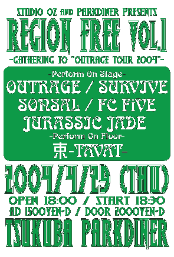
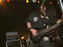
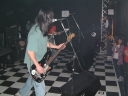
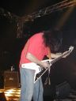

2004.04.29筑波SOUND SPACE PARKDINER
STUDIO OZ&PARKDINER PRESENTS
REGION FREE Vol.1
-GATERRING TO "OUTRAGE TOUR 2004"-
出演:JURASSIC JADE・ OUTRAGE・SURVIVE
FC FiVE・SONSAL・束-TAVAT-

●ＪＵＲＡＳＳＩＣ ＪＡＤＥ’Ｓ setlists
ドク・ユメ・スペルマ
The Individual D-Day
新曲6（I found out)
G.D.G.
新曲3（憎しみの大地Gaza)
PLASTIC WATER MOTHER
新曲７（テロルの季節/前タイトル：Catch Me Who Can In The Rye）
新曲8（未定）
新曲4(9月のひこうきのうた）
メドレー（After Killing Mam〜精神病質〜Go tothe dogs）
鏡よ鏡
●ＭＥＭＢＥＲ’Ｓ comment
ＨＩＺＵＭＩ
ＮＯＢ
GEORGE
ＨＡＹＡ
●ＡＬＢＵＭ
 |
JURASSIC JADE |
 |
OUTRAGE SURVIVE FC FiVE SONSAL 束-TAVAT- |
 |
OUTRAGE フジイ コウジ氏撮影 |
●BBS comment
告知失礼します 投稿者：GEORGE-JURASSIC JADE 投稿日： 4月17日(土)23時50分16秒
管理人様、失礼します。不適切ではないので、削除しないで下さい。
STUDIO OZ&PARKDINER PRESENTS
REGION FREE vol.1
-GATERING TO "OUTRAGE TOUR 2004"-
日時 ２００４年４月２９日（木・みどりの日）
OPEN 18:00 / START 18:30
チケット 前売り￥1500（ドリンク別）／当日￥2000（ドリンク別）
場所 SOUND SPACE PARKDINER（4月から移転になりました）
茨城県つくば市大角豆2012-123 （大角豆＝ささぎと読みます）
029-859-7333
出演 -STAGE-
OUTRAGE（愛知）
SURVIVE（千葉）
JURASSIC JADE（東京）
FC FiVE（茨城）
SONSAL（茨城）
-FLOOR-
束-TAVAT-（千葉）
名古屋の重鎮OUTRAGEが、ニューアルバム”CAUSE FOR PAUSE"を引っ提げてつくばに初上陸します！
他にも豪華なメンツ目白押しの爆音祭りです！
また、ステージ転換中にはフロアにて束-TAVAT-によるパフォーマンスを行います。
チケットの予約は上記のPARKDINERか
STUDIO OZ (TEL 0297-48-8951/MAIL studio-oz@oregano.ocn.ne.jp)
まで、お名前、連絡先、枚数を御知らせ下さい。
GEORGE師匠… 投稿者：jjcrew 投稿日： 4月18日(日)00時13分0秒
＞不適切ではないので、削除しないで下さい。
ぶわはははは！！！（笑）ウケますた。
当日はヨロシクです。例のMDの成果、楽しみにしてますよー。
Nobさん 投稿者：さる 投稿日： 4月20日(火)23時28分25秒
こちらにも。本当にありがとうございます。
あと、Newアルバム楽しみにしてます！！
今月の29日は..............お許しください...........
その分八王子は応援させてもらいます！！
ライブ行きたいな〜。 投稿者：ぽき別府 投稿日： 4月22日(木)19時57分25秒
筑波は仕事の都合で行けないし、福井も遠いしな〜〜。あ〜〜〜福井悩むな〜〜〜。
福井に行ったらライブは勿論、ＧＥＮＯＣＩＤＥの竹内さんの作るボルガライス、食べたいな〜〜〜〜〜〜。
真っ直ぐ進むことは難しい・・・。 投稿者：NOB-JURASSIC JADE 投稿日： 4月28日(水)00時50分31秒
春の嵐です。傘なんか差せません。
そんな中、筑波・福井へ向けてのリハーサルを終えて帰宅しました。
●２００４年４月２９日（木）
会場：筑波SOUND SPACE PARKDINER
タイトル：STUDIO OZ&PARKDINER PRESENTS
REGION FREE Vol.1
-GATERRING TO "OUTRAGE TOUR 2004"-
OPEN: １８：００
START：１８：３０
ADV：１５００円＋ドリンク
AT DOOR：２０００円＋ドリンク
出演バンド：JURASSIC JADE/ OUTRAGE/SURVIVE/
FC FiVE/SONSAL/束-TAVAT-
●２００４年５月３日（月）
会場：福井CHOP
タイトル：LOUDER THAN HELL
OPEN:１８：００
START：１８：３０
ADV：２５００円＋ドリンク
AT DOOR：３０００円＋ドリンク
出演バンド：JURASSIC JADE/ OUTRAGE/GENOCIDE
HELL SPEED BUTCHER/SUPER NEGATIVE KING
どちらも、前売りチケット取り置き受付中です。
メールお待ちしてます。
特に筑波はGEORGE企画ですので、みなさんのお力添えをお願いします！
PARK DINER初体験 投稿者：藤井 投稿日： 4月28日(水)03時19分13秒
うまく着ければいいのだけれど…。初めてなので。
嵐のせいか、こんな時間に起きてしまいました。また寝ます。
なぜか・・・？ 投稿者：NOB-JURASSIC JADE 投稿日： 4月28日(水)21時09分0秒
夏の夕方のような眠気が俺を襲います。明日は早起きが必要です。
＞藤井 様
原初の記憶ですかね？嵐のせい・・・。
嵐だと良く眠れるという人物も知ってます。
明日は車で筑波へでしょうか？
＞ぽき別府 様
福井で逢いましょう！
そうです。 投稿者：藤井 投稿日： 4月28日(水)22時50分47秒
車です。（全然洗ってない…）
時間もあるので、行きは下の道で行ってみようか、と。
帰りは常磐道で三郷ぐらいまで出て帰る、という形で……。出番が遅くても、そうすれば帰りは1時間ぐらいですから…。でも明後日も仕事なので、油断なりませんが。（笑）
＞ぽき別府様
ついに、決断なされたのでしょうか？ボルガライス食べてきてください。
あと、竹内さんには、「アイアンキングも好き！」とお伝え下さい。（笑＆謎）
帰宅は23時45分 投稿者：藤井 投稿日： 4月30日(金)00時41分2秒
いやぁ、筑波行ってよかったっす！！セット・リストはもう凄すぎです。（ここでは伏せますが。池松さん、古い曲でマイク向けてくれてありがとうございます。）
新曲でもあれだけ盛り上がるというのは、凄い！！Gerogeさんの企画ということもあったからかもしれないけれど、楽曲がパワーを持っていると信じてます！
でも、茨城パワースサマジ！！
＞サッチンマン＠G.G.様
そう、昔はみんなレコードで聴いたのよ！昔はソノ・シートというのは、基本だからね。（笑）（ウルトラマンの怪獣のヤツとかを思い浮かべるのは分かる（笑））
DISCOGRAPHYに出てる「LIVE AT EXPLOSION」というのがソノ・シートだよ。コレはCASBAHというバンドとDEMENTIAというバンドと、当時故・Hideさん（元X JAPAN）がいたSABER TIGERの4つが一緒に出たのでした。もう、20年近く前です。
そう私がまだ高校生の青春時代のことです。（遠い目）
＞Hayaさん
会いたかったです〜〜。
束のベースのみやです。 投稿者：束みや 投稿日： 4月30日(金)13時39分45秒
仕事場から失礼します。
呼んでくださったGEORGEさん、メンバーのみなさま、
昨日はお疲れさまでした！＆ありがとうございました。
最高のイベントでした。
楽しかったです！
打ち上げでたかったです。。。
HIZUMIさんのときより歌う声にしびれてファンになりました。
またぜひ誘って下さい！＆面白い企画をよろしくお願いいたします！
http://www.compact-disco.com
ありがとうございました！！！！！ 投稿者：NOB-JURASSIC JADE 投稿日： 4月30日(金)15時08分50秒
昨夜の筑波パークダイナでのGEORGE企画ライブ、お越しのみなさん・対バンのみなさん・スタッフのみなさん、ありがとうございました！お疲れ様でした。
みなさんのおかげで、GEORGEもホッと一安心（？）でしょう、多分・・・。
客席の大声援に後押しされて頑張れました。
そして、福井でのライブが近づいてきました。連休の中の移動は覚悟の上、初めての福井を楽しみにしています。
＞藤井 様
こちらの帰宅はAM5：00です。さっき起きて洗濯＆ギターのメンテを始めました。
遠いところありがとう。
暴れる・歌う・写真撮る・曲順メモるで大忙しだったね。（笑）
懐かしの曲楽しんでもらえたようで嬉しいです。（俺はリズムからこぼれてしまったけどね。イントロリフを弾きだしたときはおぉ！良い感じだぁ！と思ったんだけどね、トホホ・・・です。）
少ない小遣いで選びに選んで買ったレコードは、擦り切れるほど聴いたなぁ・・・。
CDになってから、なんかBGM的な（集中度が落ちて）聞き方になってしまったような気がする。
＞束みや 様
お疲れ様でした！ギターのNOBです。
素晴らしいパフォーマンス堪能しました。ありがとうございます。
楽屋でも、転換で「束」の演奏が始まるたびに、誰かが「このバンド良いよね」と言ってましたし、客席もひきつけられましたね。
ご一緒出来たことGEORGEのお手柄です。
ちなみに、GEORGEと俺はセッティングが終わったあと「束」にからんで演奏（勝手に！）してたんですよ。時々、みやさんが怪訝そうな様子を見せていたので、まずいかなぁと思いながら。多分聞こえなかったでしょうけど。
遠慮しないで、やりたかったな。
また、どこかでご一緒したいです。
筑波 投稿者：さる 投稿日： 4月30日(金)21時24分27秒
藤井さんのタレコミでわかりました。
そうですか、そうきましたか、Georgeさん企画だしなあ、そうですよねえ。
行かなかった私が悪いんです、「来れなかった人が悔しがるライブを！」とか言ってて
今自分が悔しがってます(泣)。11曲構成であのバランスでやられるとたまらんすなあ。
でもあの曲やその曲はやらなかったんだあ、フフフ。
はっちおうじっ！はっちおうじっ！で6月の何日なんでしょう...
http://home.g03.itscom.net/boana/
遅くなりましたが 投稿者：ゴルゴ（SonSalドラム） 投稿日： 5月 1日(土)01時35分38秒
29日、つくばでご一緒させていただいたSonSalのドラムです。
本当にお疲れ様でした！とても素晴らしいイベントでした！
打ち上げも最高でした！(笑) もっと色々お話したかったのですが…。
恥ずかしながらJJさんのライブ、初めて体験したのですが、とにかく衝撃でした。
バンドとオーディエンスが一体になれるライブ、ホントすごいと思います。
ジョージさんの「PRIEST...LIVE！」な掛け合いも最高でした！
福井はかなり遠いと思いますが、がんばってください！ではまた。
http://sonsal.info/
ぬけがらになってました 投稿者：GEORGE-JURASSIC JADE 投稿日： 5月 1日(土)16時47分33秒
企画者って大変です。
でも、みんなが楽しんでくれたようなので良かったっす！
来れなかった人は悔やんで下さい！
＞藤井さん
遠路はるばるありがとうございました！
また楽しい企画やっちゃうんで、是非お越しくらはい！
＞束みやさん
こちらこそありがとうございました！
初めての試みで、うまく行くか不安でしたが、なんとかなってよかったっす。
また一緒にやりましょう！
＞さるさん
いやもう悔しがって下さい。
八王子はよろしくっす！
＞ゴルゴさん
楽しいイベントになりましたね！ありがとうございました！
今後ともよろしくおねがいします！
あ、そうそう、よく解りましたね！あれは「PRIEST...LIVE！」です！
俺はジューダスプリース党ですから。
痩せたら革パン穿きたいです。
遠路はるばるって… 投稿者：藤井 投稿日： 5月 1日(土)21時08分38秒
僕は千葉県民ですよ。お隣の県じゃありませんか。（笑）
車で下の道で一度X.Y.Z.→Aを見に、熊谷VOGUEまで行ったこともあるし、筑波はそんなに遠くないです。（ただ、高速道路に乗ったのが久々だったので、緊張しました。情けない…。）
しかし、今回の福井はちょっと野暮用で無理です！GENOCIDEの竹内さんとは、マジで話したい！！Nobさん、僕のこと「相当のオタクだ」と紹介しておいてください。（謎）
全然関係ないですが、福井には「藤井駅」という駅があるのでそこも訪れたいですが。（汗）
JUDASのあのライヴ盤は持ってないです。初期のヤツなら持ってますけどね。そういえば、ここんところ「SAD WINGS OF DESTINY」を聴いてました。GeorgeさんがJUDAS党だとすると、僕は完全にSABBATH党です。僕の愛機はギブソンの黒のSGです。（が、十字架のインレイは入ってません。（笑））
レコードで聴く音楽はなんか確かに重みがあったような気はします。
ちなみに初めて買ったCDは「SKULL THRASH ZONE」でした。
＞暴れる・歌う・写真撮る・曲順メモるで大忙し
いえ、まだ余裕がありました。名古屋の時は児玉さんのダイヴを受け止めたり、モッシングしたりしてもう、わけわかんなかった…。酒は入ってたし…。
次は八王子ですね。京都はちょっと無理だろな〜〜。
筑波ではお疲れ様です。 投稿者：NEMO＠SURVIVE 投稿日： 5月 1日(土)23時33分18秒
久しぶりにご一緒できてとても楽しかったです。
また必ずどこかでご一緒してくださいね？
それまでによりスケールUP出来るように頑張りたいです！
またよろしくお願いします。
http://www.howling-bull.co.jp/survive/
お疲れちゃーん！ 投稿者：jjcrew 投稿日： 5月 2日(日)10時12分34秒
…と、インスタントジョンソン風に言ってみました。
つくばPARK DINERへお越しの皆さん、対バンの皆さん、スタッフの皆さん、そしてGEORGE師匠お疲れさまでした。充実した濃い１日でしたね（打ち上げも含め…）。
これから一路、福井まで移動です。ばっちり渋滞にハマりながらも、テンション上げて行こうと思います。初めての福井、頑張りますぜぇー。
＞藤井様
オールドな曲、楽しんでいただけましたか？演奏中、HAYAさんの手元をじっと凝視する貴方の視線は熱かった（笑）。完全にドラマーの目、でしたね。
＞束みや様
お疲れでした！凄い気持ち良いグルーヴ出してましたね。思わず目が、足が止まる。そんな空間だったと思います。またご一緒したいです。
＞さる様
惜しいものを見逃しましたね（笑）。さるさんのお目当ての曲は分かってますから、ちょっと俺から煽りを入れておきます。八王子で会いましょう！
＞ゴルゴ(SonSalドラム)様
オーーーーイェーーー！（ロブ風に）いただいたCD-R、早速聴きまくってますよー！
あと打ち上げでは色々と絡ませていただき、ありがとうございました。
しかしnamekawaさんのダンスステップ＆手拍子はおかしかったっす（笑）。
＞NEMO@SURVIVE様
お疲れ様でした！こちらこそ、本当に久々の共演嬉しかったです。
JJの出番がすぐ後でなかったら、きっとフロアで暴れてたと思います、俺…。
それぐらい、ヤバイ存在感でした。またきっとご一緒しましょう、ぜひ！！！
行ってきます！ 投稿者：NOB-JURASSIC JADE 投稿日： 5月 2日(日)10時51分43秒
さあ！福井に向かいます。
＞さる 様
明日はさるさんの「あの曲やその曲」もやると思います。八王子ではどうかなぁ？（笑）
日程は帰り次第UPします。
＞ゴルゴ（SonSalドラム） 様
お疲れ様！気持ちよい演奏でしたよ、SonSalは。
俺たちを楽しんでくれたようでうれしいっす。
また、どこかでやりましょう。
＞NEMO＠SURVIVE 様
久しぶりの共演、楽しかったです。
お互い「手」の小さいギターリストの不利を逆手に、良い曲作って頑張りましょう！
次回の共演頼みます。
ドラマーとして 投稿者：藤井@山陽新幹線 投稿日： 5月 2日(日)11時28分13秒
Hayaさんのタムの位置は高いから、よく見えないんですよ。(プラス､シンバル類が低い)でも、なぞは解明されてきました。(笑)個人的に質問とかいろいろあるんですけどね。福井頑張って下さい。
先日は！ 投稿者：なめ(SanSalギターボーカル) 投稿日： 5月 3日(月)00時50分7秒
大変遅れましてスミマセン。先日はありがとうございました！
まずはGeorge様楽しいイベントをありがとうございました！！
初めてJJを体験いたしましたが、不思議と？文学的センスを感じながら見させていただきました。
危うく目で妊娠させられてしまうところでした（笑）
＞HIZUMI様、最後は思わず、ライブ以上の美声を（恐縮です）ご披露することになりましたが楽しかったです！全国の若者にこれからも歌わせつづけてください（汗）
＞NOB様、同じ弦を弾く者としてあんな複雑なリフをどうしたらクリアに弾きこなせるのかもっと
お話したかったのですがとにかく圧巻でした。所詮センスなんでしょうか（笑）
またどこかでお会いする機会があることを願ってやみません！
福井でのライブ成功することを祈っております。
http://sonsal.info/
BACK TO